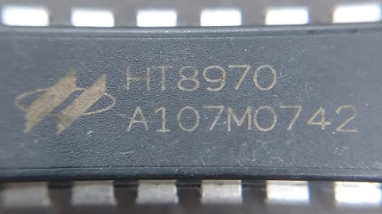
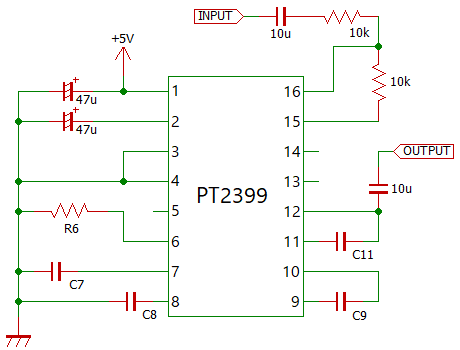
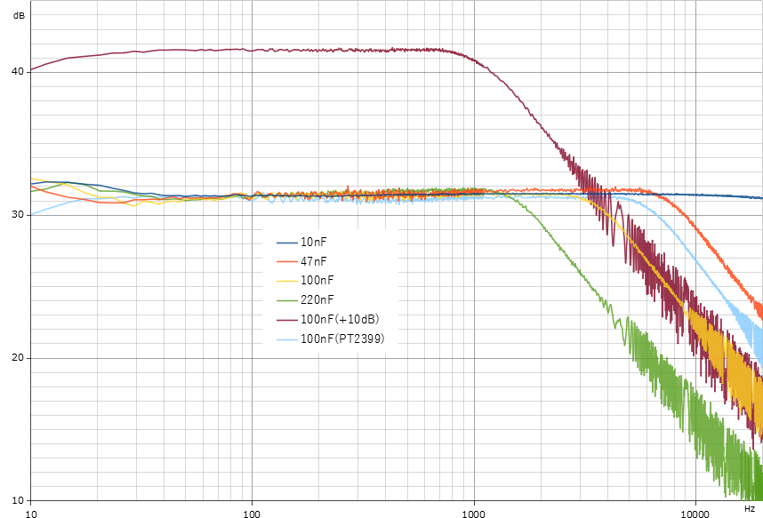
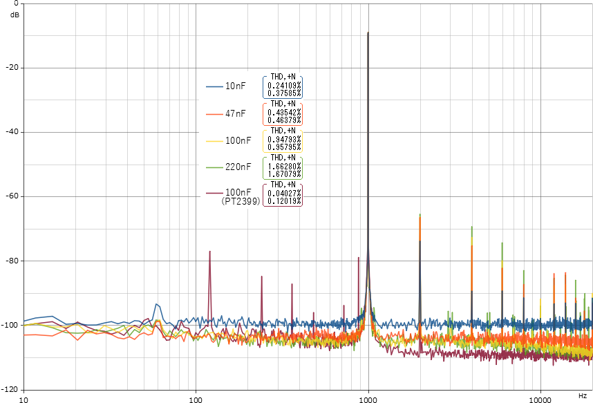
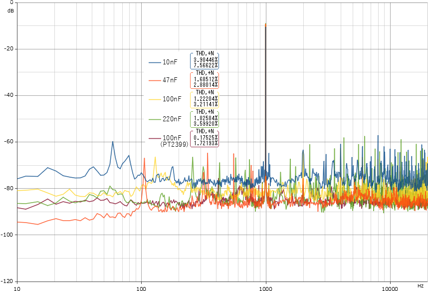

HT8970 特性測定
2021年08月11日 カテゴリー：実験等

HT8970は、PT2399に似たデジタルディレイICです。2020年12月に生産終了していますが、しばらくはAliExpressで手に入ると思います。データシートによると、RAMサイズが20キロビットとなっており、PT2399（RAM44キロビット）よりディレイタイムが短くなります。
PT2399の時と同様に、下図の回路でC9 = C11の容量値を変えた場合の特性等を測定します。C7 = C8 = 100nF、入力レベルは-10dBu（約0.69Vp-p）です。比較のためPT2399のデータも掲載します。
※今回購入したものは何かしらの製品基板から取り外した中古品のようです（本物かどうか不明です）。

- ディレイタイム（ミリ秒）
もう少し短くなるのを予想していましたが、約0.58倍となっています。R6 PT2399 HT8970 0 30 17 4.7k 81 49 10k 147 86 22k 280 164
- 周波数特性 一つは入力レベル+10dB

HT8970の100nF（黄色）はPT2399の100nF（水色）より少し高音域の下がり方が大きくなっています。HT8970のデータシートの回路例で47nFが使われているのは、こういった特性の違いを反映しているようです。
- ノイズ・歪率（1kHz正弦波を入力）
▽R6 = 0Ω

▽R6 = 22kΩ

PT2399よりHT8970の方が全体的に歪率・ノイズ共に大きくなっています。
- 分圧用抵抗
IC内部のアナログ基準電圧は抵抗分圧で生成されていると考えられています。HT8970はこの抵抗値が約2.9kΩでした（PT2399は約5.5kΩ）。PT2399の2番ピンを使ってコーラス回路を構成しているものをHT8970で置き換える場合、効き方が変わってくると考えられます。
HT8970はPT2399と特性が違っているということがわかりました。特に長めのディレイタイムで使うのは厳しいです。ディレイタイム最小でコーラスにするとしても、生産終了品なので新規設計に使いたくないところです。……ということで、残念ながらHT8970の使い道はあまりなさそうという結果になってしまいました。